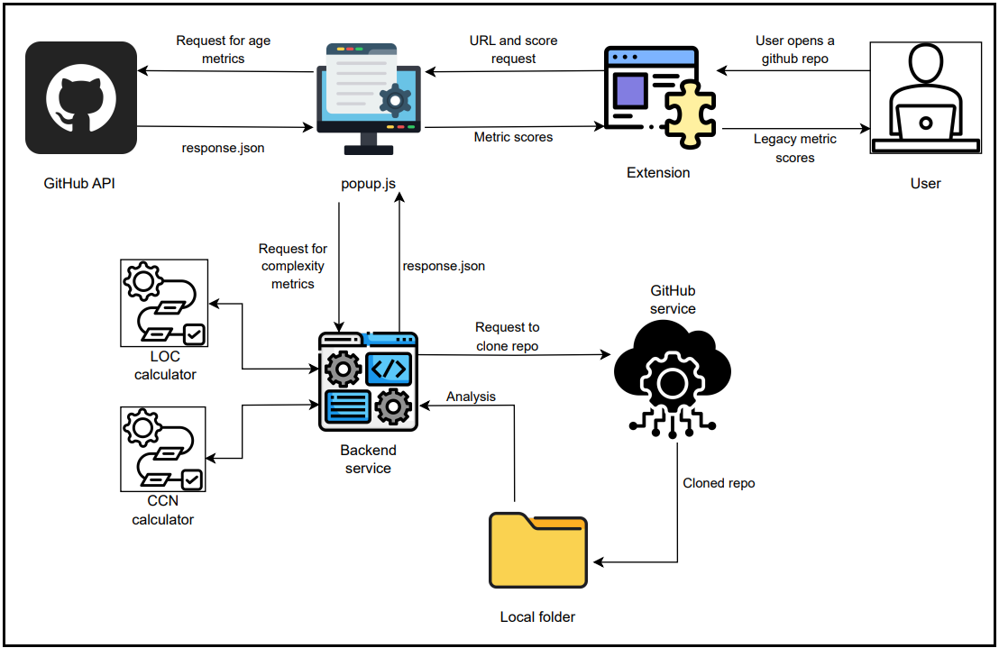

LegacyLens was designed as a light-weight chrome extension to assess GitHub repositories in real time to evaluate the legacy state of the repository, with the aim of helping the developers make a quick informed decision about the future of the repository. The assessment is done through analyzing two key categories of metrics - 1.) age of the repository and 2.) code complexity metrics. These metrics provide information about the repository which is not explicitly mentioned in the existing documentation.
Hardware and Operating System:
The tool is designed as a Chrome extension. The extension can be installed by following the below steps:
git clone https://github.com/Chiranjeevi2001/legacylens.git
const token = 'PASTE YOUR TOKEN HERE'
chrome://extensions in the address barThe age metrics are directly retrieved by the extension JavaScript, popup.js, from the GitHub API, as this is a lightweight task. URL validation and extraction of the owner and repository names are also handled by 'popup.js'. For the complexity metrics, a back-end service written in Python and deployed on Vercel clones the repository into a local directory. Python functions are used to calculate the LOC and CCN scores. The lizard library is used to compute CCN. The results are then returned to the extension as a JSON object, where the final calculations are performed, and the scores are displayed to the user.
Chiranjeevi B S, Sridhar Chimalakonda